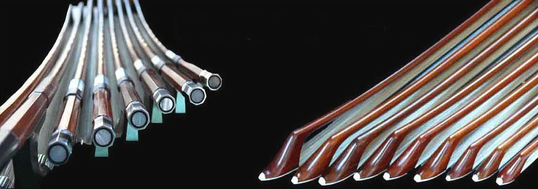
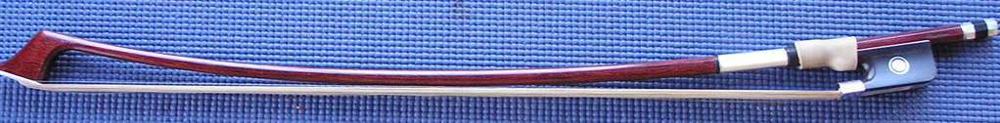

|

Zdzislaw Prochownik Professional quality double bass bows since 1983
 Purpleheart bows 127-140 grams. Excellent bows with very fast response, well balanced, good range off low medium and high sound.
Great
for orchestra and chamber playing.
My Links;
How to repair a broken violin, viola, cello or double bass bow Artists using my bows. Video1, Video2
Double Bass Compendium for the Classroom International Pernambuco Conservation Saving the Music Tree / Smithsonian INFORMATION ON PAUBRASILIA ECHINATA PROVIDED BY BRAZIL 2025 Plantation of Paubrasilia Enchinata 2025 Conserving Pernambuco, Supporting Music By Heidi Waleson 2025
The Sustainable Bow By Heidi Waleson
2026 More about double bass and bows
HOW MUCH SHOULD I SPEND ON A DOUBLE BASS BOW ?
It is a question often asked, especially by serious students. The answer is very simple. Given that one receives good value for the cost, one should spend as much as financially possible to acquire the best bow possible that suits the individual player. There are many reasons to do this, but the main ones are, firstly, that bows generally keep rising in price over time. Secondly, your performance level will increase proportionately, and most of all, it will help teach you how to play more naturally. It is also very cost effective, considering that one would have to pay around ten times that to realize comparable benefits when purchasing an instrument. A quality
bow is very important in achieving musical results as it is a direct
extension of the arm and ultimately, the body and soul.
HOW TO CLEAN BOW HAIR
This procedure is NOT recommended but since many people have asked me I have decide to show how it could be done. Buy alcohol – Methanol (methyl hydrate) or Ethanol. Alcohol must be as pure as possible (98% and up.) You will need a rubber glove, clean cloth and a small clean glass jar. Methyl hydrate is poisonous and you must have good ventilation. Contact with the alcohol will damage or might even remove varnish from the bow. Both alcohols are extremely flammable - you must keep away from any flames, sparks or other sources ignition. Remove the frog from the bow. For small dirt or grease patches on the hair (02.jpg), soak a cloth in the alcohol and rub hair and soaked cloth between your fingers (03.jpg) When the hair is full of old dirty rosin you soak hair in jar for 5-10 minutes (04.jpg), dry gently with a cloth, and let it air dry completely before assembling. Practice first without alcohol to make sure the stick does NOT come in contact with alcohol. Bows that are more valuable should be handled by professionals. see pictures
DOUBLE BASS BOW by Bruce W, Okrainec
If you are a string player, I am sure you will agree that the importance of the bow cannot be overstated, after all it is the implement responsible for producing our sound. The double bass is unique among the string family in that it has two distinct bows: the French bow and the German bow. It appears that "one continued the tradition of the viol family, the other the violin family" (Walter, 1983 p. 28). Similarly, Green states "the German style was adopted from the viol family. The French style was adopted from the present violin family" (Green, 1973, p. 34). The existence of two types of bows has generated substantial debate among bassists as to which method is superior. The subjective analysis has tended to conclude that "the weaker aspects of the two bows can be mastered by a competent bassist" (Green, 1973, p. 34). Walter states, "it must be stated unequivocally that players of both bows are able to overcome the inherent disadvantages of one or the other" (Walter, 1983 p. 29). So which bow do I teach? Walter suggests that "the beginning bass student who has played no string instrument earlier on be offered the German [bow] .........more
MASSARANDUBA
BOWS
One of my South American friends has shown me a very good
double bass bow made from Purpleheart wood and also mentioned
about good bows being made from other Brazilian and South
American woods. After doing some research, analyzed lab test
results of bending strength, stiffness, density, crashing
strength, weight and availability, I have decided to experiment
and make a few bows. Of course, the selection of wood with tight
nice grains is very important. The first few Massaranduba bows
were sold quickly and were preferred over the traditional
Pernambuco bows. The French model bows are slightly heavier (135
-150 grams). For these bows, I have chosen a model similar to
Sartory and Vigneron. While working with this wood I have found
better consistency throughout the whole stick, better vibration
quality, and more predictable results. This wood grows in many
South American countries and is being used in bridge construction,
support beams and decks. Massaranduba is available at exotic
lumber suppliers in the US, Canada, and Europe. |
{kind=link}